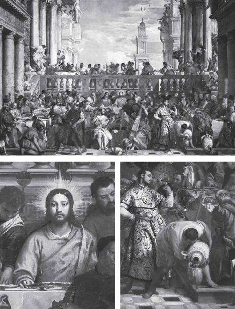
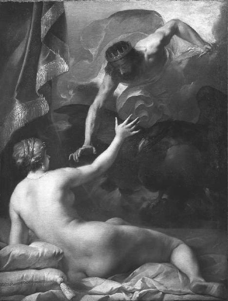
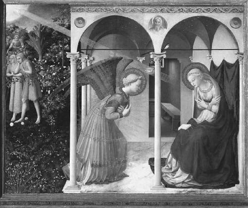
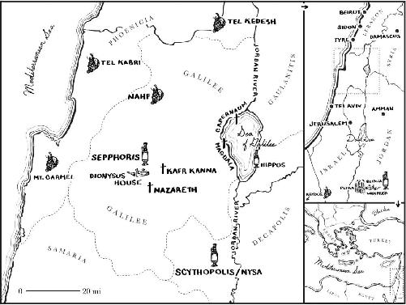

An hour and a half since the opening bell, we’re back at the double security doors in the foyer beneath the Salle du Manège. Dr. Kardianou exits with Father Francis, still grinning like the Cheshire Cat. He’s off to a scheduled meeting with the Mind and Life Institute, an organization founded by the Dalai Lama. The curator lets me off the leash to spend the rest of the afternoon in the museum by myself. So with the hors zone badge still pinned to the collar of my shirt, I head straight for the mother lode. In the ancient world the fact that wine was drugged may have made it unusually intoxicating, seriously mind-altering, occasionally hallucinogenic, and potentially lethal. But for those who believed this wine would make them immortal, it was something much more than chemical witchcraft. It was nothing less than a miracle. And the Greeks told fabulous legends about the sacrament that helped them cheat death.
Every year in the district of Elis on the western Peloponnese, for example, three empty water basins would be sealed up overnight in the Dionysian shrine at the appointed hour.1 As the Greek travel writer Pausanias relates: “in the morning [the priests] are allowed to examine the seals, and on going into the building, they find the pots filled with wine. I did not myself arrive at the time of the festival, but the most respected Eleian citizens, and foreigners as well, swore that what I have said is the truth.”2 So too on the island of Andros, just off the mainland, Dionysus’s “appearance” or epiphaneia (ἐπιφάνεια) came in the form of a particular miracle every year on January 5. A spring inside the god’s temple would suddenly transform into wine, said to flow continuously for seven days.3 According to the naturalist Pliny, this unbelievable event was still occurring in the first century AD. And he interrupts his Latin text to record the name of this special holiday in Greek: the God’s Gift Day (dies theodosia/Θεοδοσία). By design, January 6 is now celebrated by Christians around the world as their Epiphany—the day when the Three Wise Men legendarily descended on Bethlehem bearing gold, frankincense, and myrrh for the newly incarnate infant Jesus.
The nativity of Dionysus himself was also something out of this world. In addition to his epiphany as the Holy Child of Persephone at Eleusis, the Greeks had a separate myth about the God of Ecstasy’s strange birth by an ordinary woman named Semele. She was impregnated by Zeus in the form of an eagle, but later incinerated when the King of the Gods showed his true form, killing the mere mortal with his lightning bolt. In order to bring baby Dionysus to term, Zeus decided to sew the fetus up in his thigh, later giving birth to his own son in Anatolia—where Dionysus found his very first female followers. Semele’s own sisters don’t believe a word of the alleged affair with Zeus. Mortals don’t mix with immortals. They think she made the whole thing up, but the wine god won’t stand for it. To save Semele’s good name, the whole plot of Euripides’s The Bacchae tracks the return of this exotic eastern Dionysus to his real motherland, Greece.
The first two lines of the play stress the unusual bond between the wine god and his father in heaven. Dionysus calls himself the “Son of God” or Dios pais (Διὸς παῖς), and refers to his earthly mother as the “young girl” or kore (κόρη), which could also be “maiden” or “virgin.” Yes, mortals do mix with immortals. And as the ultimate hybrid, the God of Ecstasy is the miraculous result, both human and divine. As The Bacchae proceeds, these two sides of Dionysus are in constant tension. He wants to introduce the Greeks to a new sacrament for a new millennium, but he doesn’t want to repeat Zeus’s lightning mishap. So in order to avoid scaring everybody to death with the full force of his godhood, the shape-shifter “exchanges his divine form for a mortal one.” And a funny one at that: a long-haired wizard. He is ridiculed as “effeminate,” with hair “tumbling all the way down his cheeks.” Just like the “luxurious locks” of Dionysus himself, who blurs the boundary between male and female.4 Only then is the incognito wine god able to uncork his magic potion, initiating the women of Greece into his Mysteries.
The biggest painting in the Louvre is an outstanding interpretation of the supernatural phenomena that surround the epiphany of Dionysus. And it’s the only stop on my solo tour before calling it a day. At a noticeably slower pace, I retrace our steps through the Galerie Daru, until I find myself winded once again before the Winged Victory of Samothrace. That staircase is no joke. Instead of heading left toward the secret warehouse, I hang a right for the Peintures Italiennes. Past the understated Botticellis and Fra Angelico’s Crucifixion, things get awfully Christian awfully fast. The supernova of Virgins that begins in this corner of the Denon Wing streams into the Louvre’s magnificent Grand Gallery. It’s hard to find an Italian Renaissance painter without a Madonna and Child in their portfolio. I swim past all the mom-and-son duets toward Leonardo da Vinci’s Virgin of the Rocks and hang a hard right into the Salle des États.
It looks better fit for an aircraft hangar than an exhibition hall. Before this lofty space became part of the Louvre in 1878, it hosted legislative sessions under French Emperor Napoleon III. In 2005 the entire room was remodeled by Peruvian architect Lorenzo Piqueras. The $3.6-million project integrated a glass checkerboard roof that now showers natural light onto the museum’s pride and joy.5 I can barely see Leonardo’s Muse over the gaggle of selfie sticks. There must be a hundred tourists clustered together in a frothing semicircle, all vying for their tedious shot of La Gioconda. That’s how da Vinci’s people refer to the “Florentine gentlewoman” with the “gently supercilious grin” on the thin panel of poplar about thirty yards away.6 I prefer not to get any closer to the mosh pit. And I don’t need to. Because I didn’t come for the Mona Lisa.
I steadily twist my neck along the invisible arc leaping from the “most written about, most sung about” pair of eyes in the history of Western iconography. And I land on a sixteenth-century canvas by the Venetian artist Paolo Veronese. Overshadowing da Vinci’s petite showpiece, this two-hundred-twenty-square-foot beast is the reason I’m here. Aside from La Gioconda and Veronese’s Jupiter Hurling Thunderbolts at the Vices to my right, it’s the only piece of art in the otherwise bare Salle des États. But no one seems to notice. With the mob at my back, I soon realize I’m the only person in Room 711 of the Louvre taking part in this sumptuous, super-sized banquet. I laugh at the absurdity of my private audience with the wine god.
I’d recognize that drunkard anywhere.
In this version of the myth, the virgin mother has somehow survived her divine pregnancy. She has dragged her adult son to a wedding party against his wishes. He has just turned thirty years old, after all, and probably had other plans for this cool evening in January. Plus, the God of Ecstasy is trying to keep a low profile. He’s well aware that the wild, hallucinatory Mysteries he’ll soon be introducing to civilized folk are not for everybody. With heroic patience, he has waited his entire life for just the right moment to unveil his divine intoxicant to the world. Tonight is not the night. But his mother has a reputation to worry about as well. For three decades she has endured the rumors and ridicule that plague any woman who claims to have birthed the Son of God. If only her gifted boy, disguised as an ordinary human all these years, could finally make his godhood known. Just one little miracle.
Right on cue, the wine runs out, and the party is in crisis. Had his mother planned this all along? When she apprises him of the situation, the wine god feels totally set up. In the old story that inspired this scene before me, the God of Ecstasy angrily reminds his mother in Ancient Greek, “My time has not yet come!” (oupo ekei e ora mou/οὔπω ἥκει ἡ ὥρα μου).
But the virgin is undeterred, instructing the hapless waiters to simply follow her son’s lead. The God of Ecstasy notices six enormous stone water jars off to the side and, against his better judgment, decides it’s time to shine. He digs into his bag of tricks and whips out a combination of the annual Epiphany miracles from the Greek district of Elis and the island of Andros. The God of Ecstasy takes one look at the waiters, motions to the jars, and uses a great Greek verb, gemisate (Γεμίσατε): “Fill ’em up to the brim.”
To keep the party going the attendants are told to take an immediate sample to the chief steward. Veronese paints him in an emerald cloak and turban, his meaty hand caressing a purple pouch next to a dagger. He takes one sip of the incredible potion and is left dumbstruck. Not because the water has just inexplicably turned to wine, which the steward knows nothing about. He simply cannot believe what’s being uncorked this late in the evening. Unaware where the vintage came from, he jokes to the groom something to the effect of: “Dude, most people don’t serve the good shit when everybody’s already drunk.”

The Wedding at Cana, painted by Paolo Veronese around 1563, currently in the Louvre.
Frozen in time, this is the ancient moment captured by Veronese, but it’s all anachronistically set in sixteenth-century Venice. The guests are oblivious to the miracle taking place around them. At the bottom right of the canvas, a single servant pours the magical wine from one of the stone water jars into a golden amphora. Wide-eyed and baffled, the chief steward has just sent the first chalice of the new sacrament over to the groom for tasting. For the initiates who have unwittingly gathered for this Epiphany, things will never be the same.
And there, at the center of the gargantuan table in front of me, is the long-haired wizard orchestrating the whole affair. But it’s not Dionysus.
It’s the most famous human being in recorded history.
Jesus of Nazareth.
His bearded face is glowing. Beams of light explode around his head in a refulgent ring. As he stares into mid-distance from the bull’s-eye of Veronese’s The Wedding Feast at Cana, Jesus’s flesh begins to morph into the divine light that signals his immortality. If he were here, Father Francis would note that only Jesus and the Virgin Mary, seated to his right, are painted with those shining halos. Of the roughly 125 figures on the busy canvas, only they have conquered death. Only they have activated the rainbow body that will transport them through the cosmos when they leave their physical bodies here on earth. Right now in remote parts of the Himalayas, the priest would remind me, Buddhist monks are actively engaged in the same pursuit.
And I’d remind him, as I often do, that the Greeks were, too. Except they figured out how to bypass a lifetime of meditation and preserved it in the Eleusinian Mysteries. What Cicero called the most “exceptional and divine thing” Athens ever produced. And what Praetextatus said was crucial to the future of our species. Eleusis held “the entire human race together.” Without it, life would be “unlivable.” Dionysus would eventually make his Epiphany in Demeter’s temple as the Holy Child of Persephone. But it wasn’t enough for his fanatics. They wanted him all the time. And so, for those who did not want to spend their time and money on the long initiation into the Eleusinian Mysteries, secret networks started popping up all over the Greek countryside, where the wine god and his immortality potion suddenly became much more accessible.

Zeus and Semele, painted by Jacques Blanchard about 1632, currently in the Dallas Museum of Art.
The English classicist and theologian A. D. Nock, Harvard’s leading authority on ancient religion in the mid-twentieth century, summed it up best in his influential article from 1952, “Hellenistic Mysteries and Christian Sacraments.” Nock understood the real draw of the God of Ecstasy:
In spite of early institutionalization, his worship retained or could recapture an element of choice, movement and individual enthusiasm.… Apart from the devotion of the sick to Asclepius, Dionysus provided the single strongest focus for private spontaneous pagan piety using ceremonial forms. Dionysiac initiations did not only, like those of Eleusis and Samothrace, confer a new status on the initiate: they also admitted him to groups of likeminded persons, possessed of the same status and often a similar hope for the hereafter—not exactly to a Church, but to congregations which used the same symbols and spoke the same language.7
Nock acknowledges Euripides’s The Bacchae as our main classical source for the Mysteries of Dionysus. Its rich, descriptive vocabulary offers unique access to the nocturnal “congregations” of god-filled spiritual seekers. In The Dionysian Gospel, published in 2017, Dennis MacDonald of the Claremont School of Theology compares the Ancient Greek of The Bacchae with the Ancient Greek of the Gospel of John to prove that the Evangelist was intimately familiar with these Dionysian “symbols” and “language.” In order to portray Jesus as the consummate Son of God, John knew all the loaded terms that would appeal to any Greek speaker of the time. And he used them throughout his Gospel to depict Jesus as the second coming of Dionysus.

The Annunciation, painted by Fra Angelico about 1426, currently in the Prado Museum in Madrid, Spain.
The divine birth is just one example among many. As mentioned earlier, Dionysus refers to himself as the “Son of God” in the very first line of The Bacchae, using a phrase that is repeated later in the play. But there are many ways to communicate that in Greek. In three different places Euripides uses the unique word gonos (γόνος), which literally means “begotten,” alluding to Dionysus’s emergence from Zeus’s thigh after the death of his virgin mother, Semele.8 In the very first chapter of John, the Evangelist uses the similar-sounding word genos (γένος), not once but twice. He is the only Gospel writer who describes the nativity of Jesus this way. When John includes the Greek phrase monogenes theos (μονογενὴς Θεὸς) in 1:18, he means the “only begotten” or “unique offspring” of God. But in case it weren’t obvious enough, John then goes on to say that Jesus is so close to God the Father, he resides in God’s “lap.” The Greek kolpon (κόλπον), “the region of the body extending from the breast to the legs, especially when a person is in a seated position,” could not be clearer.9
For a Greek speaker of the time, an immediate connection to Dionysus’s one-of-a-kind birth from Zeus is almost guaranteed. The only thing that is unclear about this passage is the English translation, which ignores the word kolpon entirely, putting Jesus “in closest relationship with the Father.”10 Without the Ancient Greek, the explicit reference to Dionysus has been entirely lost. And today, all we’re left with are weird stories about humans mating with gods. In one of the most frequently depicted scenes in Christian art, the Annunciation tells of an immaculate young girl who conceives the Son of God following unusual relations with a bird. Instead of Zeus’s eagle, God the Father manifests himself as a dove, the Holy Spirit sailing on golden rays of light to impregnate the Virgin Mary.
In The Dionysian Gospel, Dennis MacDonald goes on to examine all the key “symbols” and “language” from John’s Gospel that have been lost in translation. But the scholar pays special attention to the one thing that really defined the God of Ecstasy in the centuries before Jesus: his sacrament. Without the wine, there is no Dionysus. And without the Eucharist, there is no Christianity. The potion that would become the calling card of the new Church begins right here on Veronese’s sixteenth-century version of the water-to-wine miracle at Cana. This is how Dionysus enters Christianity. And this is how the Ancient Greek pharmakon is transformed into the pharmakon athanasias, the Drug of Immortality. It all started with this very scene from the Gospel of John. Here in the Louvre, across from the Mona Lisa sucking up all the air in the room, this is ground zero for the pagan continuity hypothesis. It places the Greek Mysteries at the very foundation of Christianity.
John’s is the only Gospel that records this event—the first miracle that launches Jesus’s public mission. In Matthew, Jesus starts his career by healing a leper.11 In Mark and Luke, it’s an exorcism.12 From the very beginning, however, John wanted his Greek-speaking audience to immediately associate Jesus with the God of Ecstasy. As MacDonald states, “the changing of water into wine was Dionysus’s signature miracle.”13 He goes on to quote the German scholar Michael Labahn: “The supernatural, miraculous transformation denotes the epiphany of Jesus according to the pattern of Dionysus.… The juxtaposition of Jesus and Dionysus depicts Jesus as a god.” Just as the Greek speakers of the time could hardly hear about the “only-begotten” Son of God in the “lap” of the Father and not think of Dionysus, so they could hardly hear about Jesus’s first miracle and not think of the annual miracles from the Greek district of Elis and the island of Andros. Whenever wine appears out of nowhere on the Epiphany, only one god comes to mind.
As far as we can tell, John did not want to leave any room for misinterpretation. The Greek word he uses for those enormous stone water jars is a very specific one: hudria (ὑδρία). We know from the material evidence that there was a bustling industry producing these soft limestone vessels. At the time their manufacture was centered in Jerusalem, where they were used for ritual purification. Each hudria that Jesus ordered filled with water could have held twenty to thirty gallons. It may not be the river of wine that the Andrians drank from every year, but that’s still a pretty obscene amount of alcohol to take down in one night. As much as 180 gallons, or a thousand bottles.14 Talk about the God’s Gift Day! And because the wedding in Cana was said to take place in January, on the same day as the Epiphany miracle on Andros and around the same time as the Lenaia ritual that launched the festival season of Dionysus, John’s Greek speakers may have wondered what was happening behind the scenes.15 Like the maenads on G 408 and G 409, could the latest wine god have added something to the wine to make it a little more miraculous? What kind of wine was this?
I’m not the first to question the true nature of that evening’s concoction. Aside from the Gospel of John, art historian Philip Fehl identified an alternative source for Veronese’s banquet scene: Pietro Aretino’s Humanity of Christ, published in Venice in 1535. Aretino dramatically captures the chief steward’s physical reaction to the first sample of Christianity’s magical new elixir:
As he smelled the bouquet of wine which was made from grapes gathered in the vineyards of Heaven he was revived like a man who awakens from a faint when his wrists are bathed in vinegar. Tasting the wine he felt the trickle of its sharp sweetness down to his very toes. In filling a glass of crystal, one could have sworn it was bubbling with distilled rubies.16
In the Ancient Greek tradition the “vineyards of Heaven” could be traced back to the miraculous wine from Elis and Andros. Every year they had the honor of churning out the Dionysian sacrament. What was it about the wine in Cana that inspired John the Evangelist to pen his legend, pasting Dionysus onto the first page of the Christian origin story for all time? As it turns out, John’s choice wasn’t so arbitrary. Jesus’s coming-out party in Cana was perfectly positioned, and perfectly timed, to pick up where Dionysus left off.
Typing “Cana” into Google Maps won’t get you very far, but the coordinates of the Biblical town might well lead to the Christian pilgrimage site of Kafr Kanna in Galilee. Throughout the Hellenistic period leading up to the birth of Jesus, the whole region in the north of modern-day Israel remained an “important commercial center for the production and marketing” of wine.17 Wine that would nicely serve the maenads in the area, whom the God of Ecstasy had already converted long before Mary’s son came on the scene. On that drunken Epiphany in Cana around AD 30, the new wine god wasn’t playing to a random crowd. Jesus’s long-awaited appearance (epiphaneia) in Galilee came with home-field advantage.
Only slightly to the south and east, the ancient city of Scythopolis was the legendary birthplace of Dionysus himself. For that reason it was also called Nysa, providing a coherent solution for the unknown etymology of the wine god’s name: “the god” (Dio) “from Nysa” (Nysus). During Jesus’s lifetime, Scythopolis/Nysa was the largest of the urban centers that formed the so-called Decapolis (Greek for “ten cities”) on the eastern frontier of the Roman Empire.18 The God of Ecstasy remained the city’s patron deity, appearing all over its statues, altars, inscriptions, and coins.19 Today the place is called Beit She’an, lying just west of the Jordan River. Door to door from Jesus’s hometown of Nazareth, that’s about forty minutes.
Like Jesus, Dionysus liked to roam these parts. And he left his mark. The appropriately titled “Mona Lisa of Galilee” can be found in the Greek-speaking capital of Sepphoris (modern-day Tzippori), a mere twenty minutes from Nazareth.20 The spectacular fifty-four-square-foot mosaic shows a woman with the same hypnotic sideways glance as the Mona Lisa at my back. In one of eleven surviving scenes on the floor of the banquet room, she adorns a second-century AD Roman mansion known as the “Dionysus House.” The other mosaics are vignettes from the life and cult of the God of Ecstasy.21 Several deal with ritual inebriation, including a drinking contest between Dionysus and Herakles, where the Greek word for “drunkenness” or methe (μέθη) appears.22 When these explicitly pagan images surfaced for the first time in 1987, Eric Meyers of Duke University shared the consensus of the archaeological community: their surprise discovery in a Jewish town, squarely in Jesus territory, “certainly blew most everyone’s mind.”23 The pagan and Judeo-Christian worlds weren’t supposed to intersect, especially in a post-Jesus Galilee. But the evidence was mounting that Dionysus and Jesus could very much coexist.

Years later, minds would continue to be blown as another team sifted through the dirt on the other side of the Dead Sea, due south in modern-day Jordan. In 2005 the remains of an elaborate hall were unearthed in Beidha, just a couple miles north of the Petra archaeological site, the famed cosmopolitan capital of the Nabataean Kingdom that stretched into the Arabian Peninsula during the Roman Empire. The colonnaded structure, complete with a courtyard, was dated to the reign of Malichos I, a mere three decades before the birth of Jesus. The Greek influence over the shrine that survived into the first century AD is overpowering: “the architecture and sculpture demonstrate how well the Nabataeans had absorbed Hellenistic motifs and blended them with Nabataean traditions, including the tradition of ritual dining.”24
The presence of the “Dionysian cosmos,” including images of grapes and vines, led the team from the American Center of Oriental Research in Amman to envision a unique role for this sanctuary in the “transformational process that culminates in communion with the god.”25 Beidha’s “rural landscape,” overlooking “extensive vineyards,” would have made an ideal “cult center” for the Nabataean royal family, who could seek a “transcendent” experience with Dionysus as their “role model and putative ancestor.” Cut from Phrygian marble sometime in the late second century AD, a kantharos was discovered in the nearby Petra Church, the same kind of vessel recovered by Enriqueta Pons from the domestic chapel at Mas Castellar de Pontós in Spain. Contemporaneous with Jesus, the Beidha complex confirms the “abundantly attested” presence of Dionysus in the founder of Christianity’s backyard. The elder wine god could be spotted all across the southern Levant, from the Nabataeans’ stronghold in Petra, up through the Hellenized quarters of Scythopolis and Sepphoris in Galilee.
The God of Ecstasy would never stray far from his sacrament, after all. In the first century AD, the area that is now Syria, Lebanon, Israel, Palestine, and Jordan made a perfectly logical home for Dionysus, who usually hails from North Africa or the Near East in the many versions of his myth.26 The likely reason? This is where the Canaanite and Phoenician sailors kicked off the Mediterranean wine trade in the two millennia before Jesus. If we target points farther east, it’s also where the first signs of the cultivated grape were detected by Patrick McGovern, the Indiana Jones of Extreme Beverages from the University of Pennsylvania. Several sites in the area between the Taurus Mountains in eastern Turkey and the Zagros Mountains in northwestern Iran have yielded grape seeds of the domesticated variety (Vitis vinifera). According to Biblical tradition, interestingly enough, this is also the same terrain that inspired Noah to plant the first vineyard on Mount Ararat, where eastern Turkey now meets Armenia (the country that boasts the earliest wine-making facility in the world at Areni, dating to about 4000 BC).27
From the very beginning, however, this cradle of viticulture is stocking the Mediterranean with something more than the ordinary stuff. I scrutinize all the wine in Veronese’s soaring canvas: sloshing into the golden amphora, twinkling in the groom’s chalice. Even the Virgin Mary cups an empty hand on the table, eager for her first taste. What was this long-haired wizard about to unleash on these people?
By making Jesus’s first miracle a wine miracle, the Gospel of John undoubtedly tried to establish Jesus as the new Dionysus, turning Cana into the new Elis and Andros: the place where miracles happen. But by setting his scene in the wine country of Galilee, John wasn’t actually saying anything new at all. He was merely offering a reminder about the history of wine in a region that was already intimately familiar with Dionysus and his extraordinary sacrament. Before, during, and after the life of Jesus in Nazareth, the God of Ecstasy enjoyed a loyal following in the neighborhood. The archaeological finds from Scythopolis to Sepphoris to Petra are clear about that. But precisely how long before Jesus did the wine get there? And what kind of wine was it?
John’s audience would have understood that the Wedding at Cana wasn’t just a party trick, and that the wine wasn’t just party wine. It was a liquid pharmakon, with a rich heritage behind it. The use of drugged wine didn’t just accidentally creep its way into Galilee in the first century AD. A couple of thousand years before the Greeks, and long before Jesus and the Gospel of John, the sacrament that would turn eastern Mediterraneans from beer drinkers into wine drinkers didn’t just make a passing visit to the vineyards of Galilee.
It started there. And stayed there.